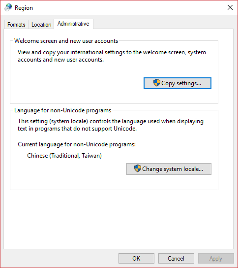
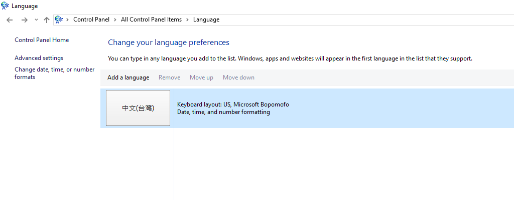
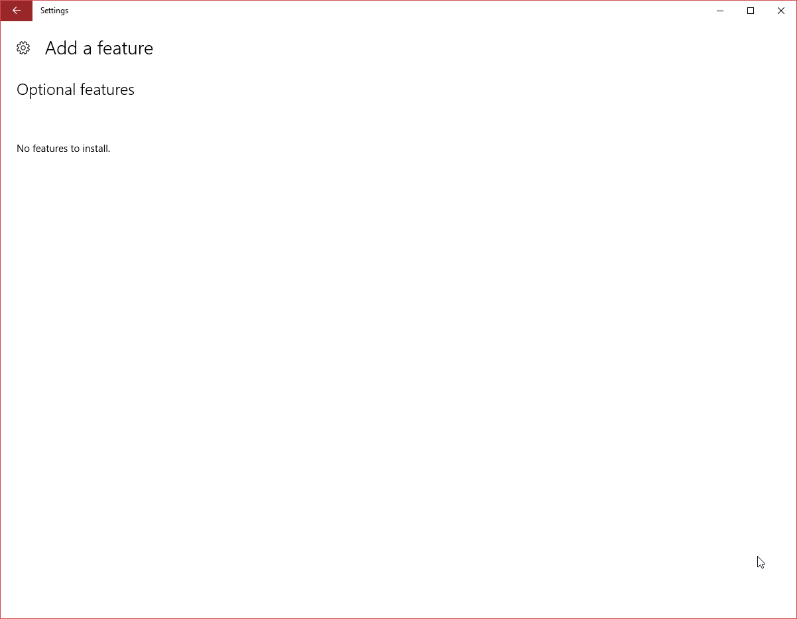
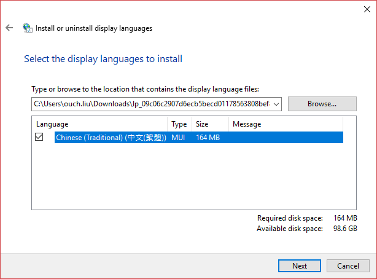

話說，之前重灌工作機的時候，試了不同的 Windows 10 版本，一開始安裝的是 10586(1511) 英文版，但是發現非 Unicode 的中文無法正常顯示。
症狀
只要是Non-Unicde的中文部份，全部都變成了一個一個的方塊。
[
直接講結論
其實解法非常簡單，只要 手動安裝新細明體和標楷體字型 就可以解決這個問題了。
但是這一連串的插波休停 (Trouble Shooting) 的過程可是花了我好幾個小時啊!!!~
對我插波休停過程有興趣的請繼續往下閱讀
-
通常，遇到中文沒辦法正常顯示的情況都會先檢查 Non-Unicode Language 的設定。很好，我的確有選繁中，台灣。 [
-
設了沒效的話，再到語言設定裡面加入中文(台灣)看看囉。 [
-
Microsoft Community 上有一篇文章說 Windows 10 的部份字型被挪到選用功能去了。那…透過新增選用功能的方式來看看有沒有救好了…很好!!因為 Group Policy 的關係不能用!! [
-
還是不行!? 那我下載繁體中文語言包來安裝，總該行了吧!!? 蝦毀!? 一樣 GG 啊!!!!~~~ (崩潰中…) [
-
好吧…看看是不是有缺什麼字型才沒辦法正常顯示… 咦!?
沒有新細明體和標楷體! 沒有新細明體和標楷體!! 沒有新細明體和標楷體!!